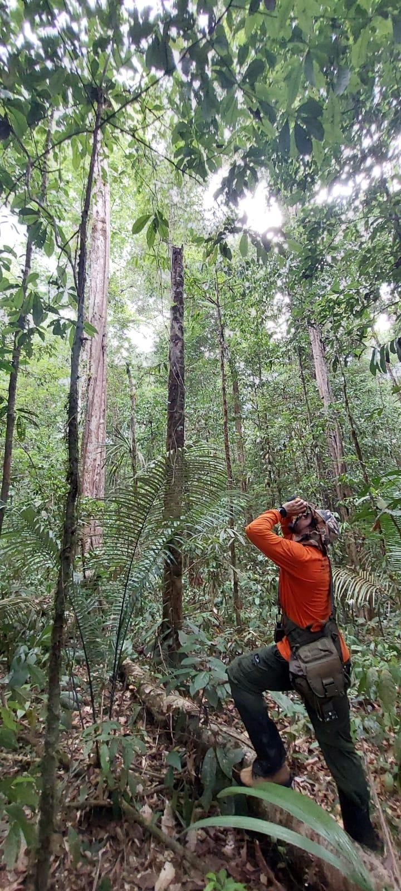
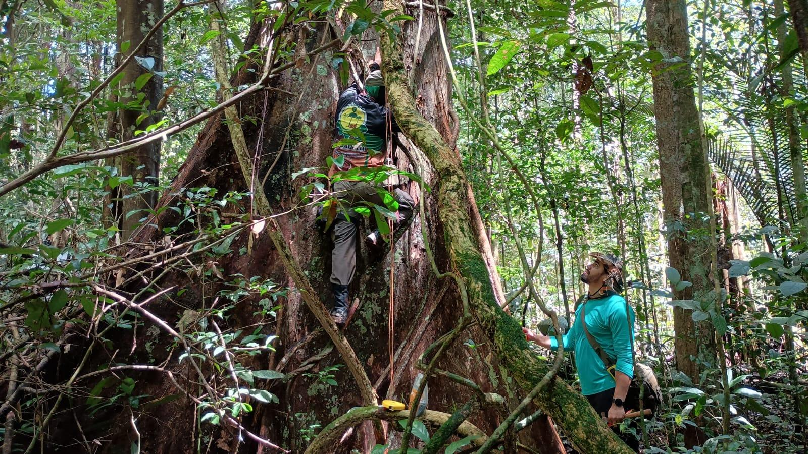
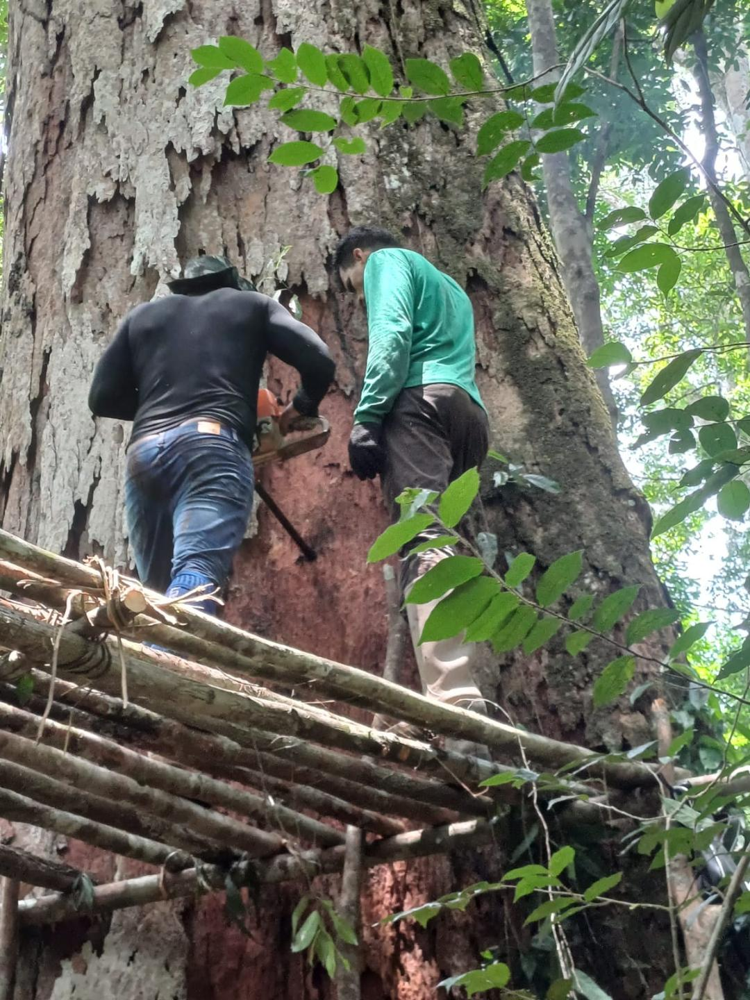

Biometria e mensuração florestal
Modelagem de crescimento, estrutura diamétrica, volume, biomassa, produtividade e dinâmica de florestas naturais e plantadas.
Ciências Florestais | Amazônia | Ecologia Espacial
Professor Adjunto | UEAP
Professor e pesquisador em Ciências Florestais, com atuação em inventário florestal, biometria, mensuração, ecologia espacial, modelagem estatística, árvores gigantes da Amazônia, modelagem de distribuição de espécies e programação científica em R.

Pesquisa em campo
A pesquisa combina observações de campo, mensuração florestal, modelagem espacial e ferramentas computacionais para investigar padrões de biodiversidade, estrutura florestal e conservação em paisagens amazônicas.




Linhas de atuação
Modelagem de crescimento, estrutura diamétrica, volume, biomassa, produtividade e dinâmica de florestas naturais e plantadas.
Análise de padrões espaciais da biodiversidade, estrutura da vegetação, conectividade e processos ecológicos em diferentes escalas.
Estudo da ocorrência, distribuição, diversidade, conservação e importância ecológica de árvores excepcionais em florestas amazônicas.
Aplicação de modelos ecológicos, dados ambientais e programação em R para investigar nichos, biodiversidade e mudanças climáticas.
Contato acadêmico
Este site está em desenvolvimento contínuo e será atualizado com projetos, publicações, materiais didáticos, aplicativos e oportunidades de colaboração.